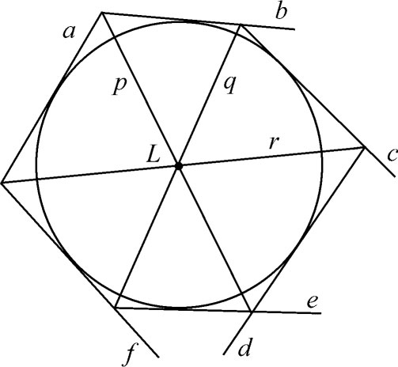
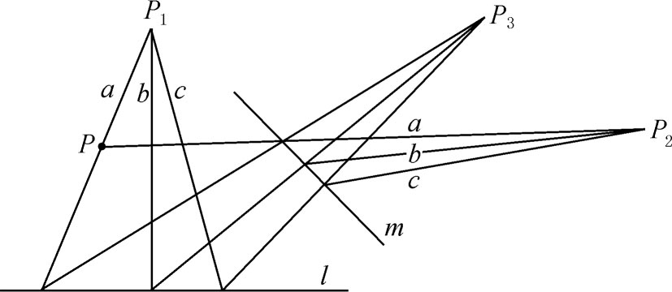
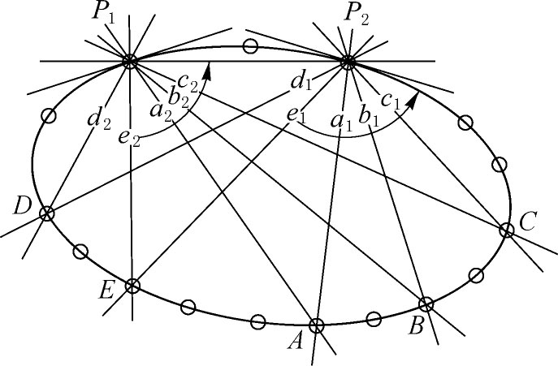
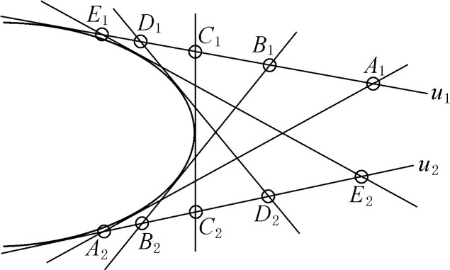
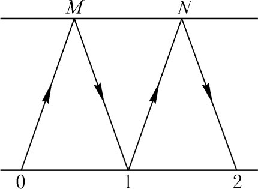
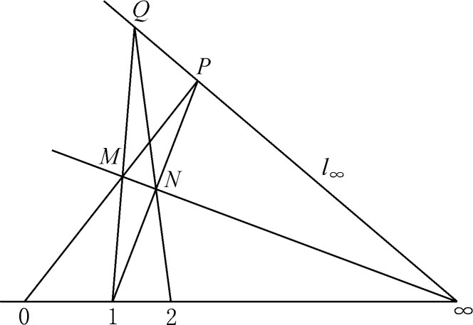
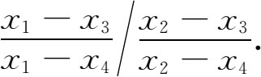

3．综合的射影几何学的复兴
蒙日和他的学生从事的主要领域是射影几何学。这门学科在17世纪曾经有过相当活跃然而短暂的突进（第14章），但是被解析几何、微积分和分析学的兴起所淹没了。我们已经提到过，德萨格（Girard Desargues）1639年的主要工作被忽略至1845年，而帕斯卡（Blaise Pascal）关于圆锥曲线的主要论文（1639）一直没有找到。只有拉伊尔（Philippe de La Hire）的书可供使用，其中采用了德萨格的某些结果。19世纪的人常错把从拉伊尔的书中学到的东西归功于拉伊尔。但是，整个说来，这些几何学家不知道德萨格和帕斯卡的工作而不得不重做。
射影几何学的复兴始于卡诺（1753—1823），他是蒙日的学生，杰出的物理学家卡诺（Sadi Carnot）的父亲。他的主要著作是《位置的几何学》（Géométrie de position，1803），也写过《关于斜截理论》（Essai sur la théorie des transversales，1806）。蒙日赞成联合运用解析几何与纯粹几何，但是卡诺拒绝使用解析方法，并开始了纯粹几何学的奋斗。我们即将充分讨论的想法有许多在卡诺的书中至少是提过的。如蒙日称之为偶然关系的原理（又通称为相关原理或者更常被称为连续性原理）那里面就有。为了避免对不同大小的角和不同方向的直线用不同的图，卡诺不使用他认为有矛盾的负数，却引进了一套复杂的图表，称为“正负号的对应”。
19世纪初期的射影几何研究者中，我们只提塞尔瓦和布利安香（1785—1864），他们两人都把他们的工作应用于军事问题。虽然他们出了力重建、整理和扩充旧的结果，可是重要的新定理只有布利安香的著名结果(14)，即还是他在多科工艺学校当学生时证明的。这定理说，如果一个圆锥曲线的六条切线（图35.5）形成一个外切六边形，那么连接相对顶点的三条线通过同一点。布利安香用配极关系导出了这个定理。

图35.5
射影几何学的复兴从彭赛列（1788—1867）得到主要的动力。彭赛列是蒙日的学生，他也从卡诺那里学了许多。当他在拿破仑（Napoleon）的远征军中做军官时，他被俘并在俄国萨拉托夫（Saratoff）监狱里度过了1813年至1814年。在那里，彭赛列不借助任何书本，重做了他从蒙日和卡诺那里学到的东西，然后着手创造新的结果。后来他扩充并修订了这个工作，发表为《论图形的射影性质》（Traité des propriétés projectives des figures，1822）。这个工作是他对于射影几何学和对于创立新学科的主要贡献。在他后来的生涯中，不得已而把大量的时间用于政府事务，虽然在不长的时期内他还保持着教授的职位。
彭赛列成了综合几何学的最热心的支持者，他甚至攻击分析学家。他曾与分析学家热尔岗（1771—1859）友好，并曾在热尔岗的《数学纪事》上发表过文章，但是他的攻击不久也指向热尔岗了。彭赛列深信纯粹几何学的独立性和重要性。虽然他承认分析学的威力，但他相信能够赋予综合几何学以同样的威力。在1818年的一篇文章（发表在热尔岗的《纪事》上(15)）里，他说，解析方法的威力不在于运用代数而在于它的普遍性，这个优越性产生于这样的事实：从一个典型的图形发现的度量性质，对于由这典型的或基本的图形派生出来的所有图形都仍然适用，顶多改变一下正负号。这种普遍性在综合几何学里能由连续性原理（我们即将讲它）得到保证。
彭赛列是充分认识到射影几何学具有独特方法和目标的新数学分支的第一位数学家。17世纪的射影几何学家讨论特殊问题，而彭赛列却考虑一般问题，探索几何图形任一投影的所有截影所共有的那些性质，亦即在投射与截影下保持不变的性质。这就是他和他的后继者们研究的主题。由于距离和角度在投影与截影下是会改变的，所以彭赛列选择并发展了对合与调和点列的理论，而不是交比的概念。蒙日在他的工作中用了平行投影；像德萨格、帕斯卡、牛顿（Isaac Newton）和兰伯特（Johann Heinrich Lambert）一样，彭赛列用中心投影，即从一个点投影。彭赛列把这个概念提高成为研究几何问题的一种方法。彭赛列也考虑了从一个空间图形到另一个空间图形的射影变换，当然是用纯几何的方式。这时他好像对射影性质失去了兴趣，而更关心这方法在浮雕和舞台设计中的运用。
他的工作以三个观念为中心。第一个是透射的图形。两个图形是透射的，如果一个能够从另一个经过一次投射与截影（这叫做透视对应）或一连串投影与截影（这叫做射影对应）得出。他运用透射图形的方法是，对于一个给定的图形，找一个比较简单的透射的图形，研究后者以找出它在投射与截影下不变的性质，这样来获得原来那比较复杂的图形的性质。这个方法的实质曾被德萨格和帕斯卡使用过，彭赛列在他的《论图形的射影性质》里赞扬过德萨格在这方面及其他方面的创见。
彭赛列的第二个主导的观念是连续性原理。在他的《论图形》里他是这样说的：“如果一个图形从另一个图形经过连续的变化得出，并且后者与前者一样得一般，那么可以马上断定，第一个图形的任何性质第二个图形也有。”怎样判定这两个图形都是一般的呢？他没有解释。彭赛列的原理也断定，若一个图形退化了，譬如六边形的一边趋于零而退化成五边形，则原来图形的任何性质都会转化成关于那退化图形的一个适当措辞的命题。
这原理对彭赛列来说其实不是新的，在概括的哲学意义下，要追溯到莱布尼茨（Gottfried Wilhelm Leibniz），他在1687年说，当两件事的已知条件的差别能变得任意小时，其结果的差别也能变得小于任意给定的量。从莱布尼茨以来这原理一直得到承认和运用。蒙日开始用连续性原理来论证定理。他想要证明一个普遍的定理，却采用图形的一个特殊位置来证明它，然后声称这定理是普遍成立的，甚至当该图形里的某些元素变成虚的时候也成立。例如，要证明关于线与曲面的一个定理，他就在线与曲面相交时证明它，然后声称即使线与曲面不相交，交点变成虚的时候，结论也成立。无论蒙日还是卡诺（他也用过这原理）都没有为它提出过任何根据。
制造了“连续性原理”这个术语的彭赛列，把这原理抬高成绝对的真理，并在他的《论图形》中大胆地应用。为了“论证”它是可靠的，他举出圆的相交弦的两段之积相等这条定理，说，当交点移到圆外时，得出关于割线与其圆外段之积相等的定理。还有，当一条割线变成切线时，切线与其圆外段变得相等，它们的积仍等于另一条割线与其圆外段的积。这一切都是挺有道理的，但是彭赛列应用这原理来证明许多定理，并且像蒙日一样，引申这原理去谈论虚的图形。（以后我们将提到一些例子。）
巴黎科学院的别的院士们批评这连续性原理，认为它只具有启发的意义。特别是柯西，他批评这原理，但遗憾的是他的批评指向彭赛列的应用，而在那里这原理确实是有效的。批评者也指出，彭赛列等人对这原理的信心其实是来源于它有代数上的依据。事实上，彭赛列在狱中的笔记表明他确曾用分析学来检验这原理的可靠性。顺便说一下，这些笔记由彭赛列写好并由他分成两卷出版，题为《分析学与几何学的应用》（Applications d'analyse et de géométrie，1862—1864），其实这是他1822年的《论图形》的修订版，而且在后面这一著作中他的确使用了解析方法。彭赛列承认能够从代数上证明这原理，但他坚持认为这原理并不依赖于这样一个证明。然而可以相当肯定的是，彭赛列依靠了代数的方法去弄清事情的究竟，然后又以这原理为依据来肯定几何的结果。
沙勒在他的《概述》里为彭赛列辩护。沙勒的论点是，代数是这原理的事后诸葛亮的（由结果追溯原因的）证明。然而，他留下伏笔，指出必须小心，不要把本质上依赖于元素的虚实的性质从一个图形转移到另一图形上去。例如圆锥的一个截口可能是双曲线，因而它有渐近线。当截口是一个椭圆时，渐近线就成了虚的。因此不应去证明一个只同渐近线有关的结果，因为渐近线依赖于截口的特殊种类。也不应把抛物线的结果转移到双曲线上去，因为在抛物线的情形，截割平面并不在一般位置。接着，他讨论了有公共弦的两个相交圆的问题。当两圆不再相交时，公共弦成虚的。他说，其实公共弦通过两个实点这件事是一种附带的或偶然的性质。必须以某种办法来定义这条弦，要不依赖于当两圆相交时它通过实交点这件事，而要是任意位置的两个圆都恒有的性质。例如可以定义它为（实的）根轴，意思是这条线上的任何点到那两个圆的切线长都相等；也可以利用这么个性质来定义它，即以这条线上任何点为圆心能画一个圆与那两个圆都垂直相交。
沙勒也坚决主张连续性原理适用于处理几何里的虚元素。他先解释几何里的虚是什么意思。虚元素属于一个图形的某一种情形或状态，在其中某些成分不再存在，而在这图形的另一状态中这些成分是实的。他接着说，因为若不同时想想这些量是实量时的那些有关的状态，就不会有虚量的观念。后面说的这些状态，他叫做“偶然的”状态，提供了理解几何里的虚元素的钥匙。要证明关于虚元素的结果，只需取图形的一般位置，其中该元素是实的，然后，依据偶然关系原理或者说连续性原理，可以推断当该元素是虚的时候结果也成立。“这样就看出，虚元素的运用和考虑是完全正当的。”19世纪时，连续性原理被承认为直观上明显的，因而具有公理的地位。几何学家们随意使用它，从来不认为它需要证明。
虽然彭赛列用连续性原理去断定关于虚点和虚线的结果，但他从未给出过这些元素的一般定义。为了引进某些虚点，他给了复杂的、不十分清晰的几何意义。当我们从代数的观点来讨论它们时，我们会更容易理解这些虚元素。尽管彭赛列的方法缺乏清晰性，但引进圆上无穷远点的概念还得归功于他，那是任何两个圆都共有的、位于无穷远直线上的两个虚点(16)。他还引进了任两球面都共有的球上无穷远圆。他接着证明，两条不相交的实圆锥曲线有两条虚的公共弦，两条圆锥曲线交于四个点，或实或虚。
彭赛列的工作中第三个主导观念是关于圆锥曲线的极点与极线的概念。这概念起源于阿波罗尼斯，并在17世纪的射影几何学工作中被德萨格（第14章第3节）及其他人用过。欧拉、勒让德、蒙日、塞尔瓦和布利安香也已用过它。但是彭赛列给出了从极点到极线和从极线到极点的变换的一般表述，并且在他1822年的《论图形》和他在1824年提交巴黎科学院的《论配极的一般理论》（Mémoire sur la théorie générale des polaires réciproques）(17)中用作建立许多定理的方法。
彭赛列研究关于圆锥曲线的配极的目的之一是要建立对偶原理。射影几何的研究者们曾经注意到，涉及平面图形的定理如果把“点”换成“线”、“线”换成“点”重述一遍，不但话谈得通，而且竟是正确的。这样重述所得出的定理为什么还成立？其原因当时是不清楚的，并且布利安香事实上还怀疑过这个原理。彭赛列想，配极关系是其原因。
然而，这个配极关系需要一个圆锥曲线作中介。热尔岗(18)坚决主张这对偶原理是一个普遍原理，适用于除了涉及度量性质者外的一切陈述和定理。极点和极线是不必要的中间支撑物。他引进了“对偶性”这个术语来表示原来定理与新定理之间的关系。他也注意到在三维的情形中点与面是对偶的元素，而线与它自己对偶。
为了说明热尔岗对于对偶原理的理解，我们来考察他是怎样对偶化德萨格的三角形定理的。首先我们应注意三角形的对偶是什么。三角形由不在同一条直线上的三个点，以及连接它们的三条线组成。对偶的图形则由不在同一个点上的三条线，以及连接它们的三个点（交点）组成。这对偶的图形又是一个三角形，所以三角形称为是自对偶的。热尔岗发明了把对偶的定理写成两栏的格式，把对偶的命题并排写在原来命题的旁边。
现在让我们考虑德萨格定理，这时两个三角形和点O在一个平面里，我们来看看把点与线对换会得出什么结果。热尔岗在刚才提到过的1825年至1826年的文章中把这个定理及其对偶写成：
| 德萨格定理 如果有两个三角形，连接对应顶点的线过同一个点O，那么对应边相交的三个点在同一条线上。 | 德萨格定理的对偶 如果有两个三角形，连接对应边的点在同一条线O上，那么对应顶点相连的三条线过同一个点。 |
这里，对偶定理是原来定理的逆定理。
热尔岗对一般对偶原理的表述是有点含糊的、有缺陷的。虽然他深信它是一个普遍的原理，但他不能证明它，而彭赛列正确地反对了这些缺陷。他还与热尔岗争发现这原理的优先权（这实在是属于彭赛列的），甚至谴责热尔岗剽窃。然而，彭赛列确实要依靠配极，却不肯承认热尔岗在认识这原理的更广的应用方面前进了一步。后来，彭赛列、热尔岗、默比乌斯（Augustus Ferdinand Möbius）、沙勒和普吕克之间开展的讨论完全弄清了这原理。默比乌斯在他的《重心计算》（Der barycentrische Calcul）中，后来还有普吕克，都很好地说明了对偶原理与配极的关系：对偶的概念和圆锥曲线、二次型无关，但当后者能用时，就与配极一致。这时期还没有得到一般对偶原理的逻辑证明。
施泰纳（1796—1863）推进了射影几何的综合发展。他是接受法国的尤其是彭赛列的观念，偏爱综合方法以至嫌恶分析学的一个德国几何学派的第一个人。他是一个瑞士农民的儿子，19岁以前一直在农场干活。虽然他大多是自学的，但他终于成了柏林的教授。他年轻时是裴斯泰洛齐（Pestalozzi）学校的教师，深感培养几何直观之重要。裴斯泰洛齐原则是在教师引导下，并采用苏格拉底（Socrates）方法（即问答法——译者注），让学生创造数学。施泰纳走到极端，他教几何不用图，在黑屋子里培养研究生。在其后期的工作中，施泰纳把英国的及其他杂志上发表的定理和证明拿过来，在他自己的著作中从不声明他的成果已有人建树。他早年做过好的创造性的工作，并企图维持他的多产的名声。
他的主要著作是《几何形的相互依赖性的系统发展》（Systematische Entwicklung der Abhängigkeit geometrischen Gestalten von einander，1832），他的主要原理是运用射影的概念从简单的结构（如点、线、线束、面、面束）建造出更复杂的结构。他的结果不是特别新的，但他的方法是新的。
为解释他的原理，我们来考察他的定义圆锥曲线的射影方法，这现已成为标准的方法。从两个线束（共点的线族）P1，P3出发（图35.6），设它们是通过线l上的点束透视相关的；设线束P3与P2是通过另一条线m上的点束透视相关的。这时线束P1与P2就说是射影相关的。以P1为中心的线束和以P2为中心的线束中标着a的线，是在两个线束P1与P2间的射影对应下互相对应的线的例子。圆锥曲线现在就定义为两个射影相关的线束的所有各对对应线的交点的集合。例如P是曲线上的一个点，而且这曲线通过P1和P2（图35.7）。就这样，施泰纳用较简单的形、线束，造出了圆锥曲线或二次曲线。但是，他并未证明他的曲线与圆锥的截口是一回事。
 |  |
| 图35.6 | 图35.7 |
他也以类似的方式造出了直纹的二次曲面、单叶双曲面和双曲抛物面，用射影对应作为他定义的基础。实际上对整个射影几何来说他的方法还不够普遍。
在证明中他采用交比作为基本工具。然而他不采用虚元素，称之为“幽灵”或者“几何的鬼影”。他也不采用带负号的量，虽然默比乌斯（他的工作我们很快要讲）已经引进了它们。
施泰纳在他的工作中从一开头就使用对偶原理。例如他把圆锥曲线的定义对偶化，得到一种新结构，称为线曲线。如果从两个射影相关的（但非透视相关的）点束出发，那么连接这两个点束中对应点的线族（图35.8）称为一个线圆锥曲线。这样的线束也刻画出一条曲线，为了区别起见，作为点的轨迹的通常的曲线称为点曲线。点曲线的诸切线是一个线曲线，在圆锥曲线的情形就构成对偶曲线。反过来，每个线圆锥曲线包络着一个点圆锥曲线，或者说它是一个点圆锥曲线的切线集体。

图35.8
用施泰纳的点圆锥曲线的对偶的概念，可以把许多定理对偶化。让我们举帕斯卡定理来形成它的对偶命题。我们把定理写在左边，新的命题写在右边。
| 帕斯卡定理 在点圆锥曲线上取六个点A，B，C，D，E，F，则A，B的连线与D，E的连线相交得一点P； B，C的连线与E，F的连线相交得一点Q； C，D的连线与F，A的连线相交得一点R。 P，Q，R三点在一条线l上。 | 帕斯卡定理的对偶 在线圆锥曲线上取六条线a，b，c，d，e，f，则a，b的交点与d，e的交点相连得一线p； b，c的交点与e，f的交点相连得一线q； c，d的交点与f，a的交点相连得一线r。 p，q，r三线通过同一点L。 |
第14章的图14.12解说了帕斯卡定理。其对偶就是布利安香利用配极关系发现的定理（图35.5）。施泰纳像热尔岗一样，没有建立对偶原理的逻辑基础。然而，他在前进过程中，通过把图形分类和注重对偶命题而系统地发展了射影几何学。他还充分研究了二次曲线和二次曲面。
毕生献身于几何学的沙勒继续彭赛列和施泰纳的工作，虽然他个人并不知道施泰纳的工作，因为我们曾经说过，沙勒不能读德文。沙勒在他的《论高等几何》（Traité de géométrie supérieure，1852）和《论圆锥曲线》（Traité des sections coniques，1865）中提出了他自己的想法。由于沙勒的许多工作或者无意地重复了施泰纳的，或者被更普遍的概念所更替，所以我们只讲应归功于他的少数主要结果。
沙勒从他弄懂欧几里得的失传的著作《衍论》（Porisms）的努力中得到交比的观念（虽然施泰纳和默比乌斯已经重新引进了它）。德萨格也用过这概念，但是沙勒只知道拉伊尔写过的有关的东西。沙勒不知什么时候还得知帕普斯（Pappus）有这观念，因为在他的《概述》的札记IX（p．302）里他提到帕普斯用了这观念。这个领域中沙勒的结果之一(19)是，圆锥曲线上四个固定点与这圆锥曲线上的任意的第五点确定的四条线有相同的交比。
1828年沙勒(20)给出了定理：已知两个共线点集成一一对应，使得一条线上任四点的交比等于另一条线上的对应点的交比，那么连接对应点的那些线是一个圆锥曲线的切线，那圆锥曲线与这两条已知线也相切。这结果等价于施泰纳的线圆锥曲线的定义，因为这里的交比条件保证了两个共线点集是射影相关的，连接对应点的那些线就是施泰纳的线圆锥曲线的那些线。
沙勒指出，从对偶原理来看，在平面射影几何学的发展中，线可以同点一样基本，并相信彭赛列和热尔岗对这一点是清楚的。沙勒也引进了新的术语。他把交比叫做非调和比。他引进“单应”这个术语来描述平面到自身或到别的平面的、把点变成点、线变成线的变换。这个术语包含了透射的或者射影相关的图形。他加了一个条件，要求变换保持交比不变，但这件事是能够证明的。把点变成线、线变成点的变换他叫做对射。
虽然沙勒为纯粹的几何学辩护，但他却是解析地思考然后几何地陈述他的证明和结果的。这种方法称为“混合法”，后来别人也使用。
1850年前后，射影几何学与欧几里得几何学相区别的一般概念和目的是清楚的；可是这两种几何学的逻辑关系并没有弄清楚。从德萨格到沙勒，射影几何里用了长度的概念。事实上，交比的概念就是用长度定义的。但长度不是射影概念，因为它在射影变换下不是不变的。冯·施陶特（Karl Georg Christian von Staudt，1798—1867）是埃尔兰根（Erlangen）的教授，他对逻辑基础有兴趣，决心使射影几何摆脱对长度和叠合的依靠。他的方案在他的《位置的几何学》（Geometrie der Lage，1847）中提出，实质上是在射影的基础上引进一种类似长度的东西。他的方案叫做“投的代数”（the algebra of throws）。在直线上任选三个点，给它们指定符号0，1，∞。然后用一种（来自默比乌斯的）几何作图法——“投”，给任意一点P配上一个符号。
为了看看这作图法在欧几里得几何里相当于什么，我们从直线上标着0和1的点（图35.9）出发。过一条平行线上的一点M作0M，然后作1N平行于0M。再画出1M，作N2平行于1M。显然01＝12，因为平行四边形对边相等。这样就用几何作图把01的长度转到12了。

图35.9
现在来看射影的情况。从三个点0，1，∞（图35.10）出发。点∞在无穷远直线l∞上，但在射影几何中这不过是一条普通的线。取一点M，过M作一条“平行”于01的线。这意思是过M的那条线应该与01在∞相交，所以我们画出M∞。作0M并延长它直到与l∞相交。然后过1作0M的“平行线”。这意思是过1的那条“平行线”应该与0M相交在l∞上。这样我们得到1P线，从而确定出N来。再画出1M并延长它直到与l∞相交于Q。过N而“平行”于1M的线是QN，我们就得到它与01的交点，标上2。

图35.10
用这种作图法能给01∞线上的点配上“有理数坐标”。要把无理数配给线上的点，必须引进连续性公理（第41章）。这概念当时尚未被很好地了解，因而冯·施陶特的工作不够严密。
冯·施陶特给线上的点指定坐标并未用长度。他的坐标虽是通常的数的记号，却只是充当点的有系统性的识别符号。所以要加或减这种“数”时，冯·施陶特不能使用算术的法则。他用几何作图来定义这些符号的运算，举例说，使得数2和3相加得数5。这些运算服从通常的数的一切规律。这样，他的符号或坐标就能当作普通的数来处理，虽则它们是几何地造出来的。
给他的点配上这些标号以后，冯·施陶特就能定义四个点的交比。如果这四点的坐标是x1，x2，x3，x4，那么交比定义为

这样，冯·施陶特不依靠长度和叠合的概念就得到了建立射影几何的基本工具。
交比是－1的四点叫做调和集。在调和集的基础上冯·施陶特给出基本定义：两个点束是射影相关的。如果在一一对应之下调和集对应于调和集。四条共点的线构成一个调和集，如果它们与任一斜截线的交点是一个调和点集。于是两个线束的射影对应也能定义了。利用这些概念，冯·施陶特定义了平面到自身的直射变换为点到点、线到线的一一变换，并证明它把调和集变成调和集。
在他的《位置的几何学》里，冯·施陶特的主要贡献是指出射影几何学其实比欧几里得几何学还基本。它的概念从逻辑上看是前提。这本书和他的《位置的几何学论丛》（Beiträge zur Geometrie der Lage，1856，1857，1860）显示了射影几何学是与距离无关的学科。然而，他还是用了欧几里得几何学的平行公理，从逻辑的观点看来这是个缺点，因为平行性不是射影不变的。这个缺点是克莱因（Felix Klein）(21)消除的。